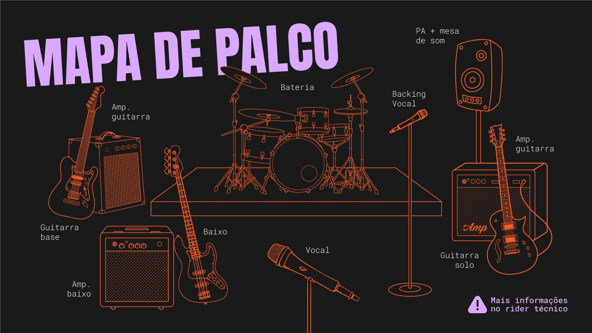

RIDER TÉCNICO
Riot! Riot! — Paramore Cover · Florianópolis/SC
Formação: 5 músicos (voz · 2 guitarras · baixo · bateria) · Estilo: pop-rock / Paramore (cover) · v1.0 — junho/2026
1 Informações gerais
Formação: 5 músicos
Estilo: Pop-rock / Paramore (cover)
Duração do show: 60–90 min (a combinar)
Passagem de som: 45–60 min
Montagem / desmontagem: ~30 min cada
Canais de palco: 13 (ver Input List)
⚡ OPERAÇÃO FLEXÍVEL Tocamos com amplificadores no palco ou tudo em linha (DI), com o sinal saindo direto das pedaleiras de guitarras e baixo — ideal para palcos menores e monitoração via in-ear.
2 Contato de produção
- WhatsApp: +55 48 99903-0613
- E-mail: bandariotfloripa@gmail.com
- Instagram: @riotriot.oficial
- Responsável técnico no palco a combinar na confirmação do show.
3 PA & estrutura — fornecido pela contratante
- Sistema de PA profissional compatível com o local (cobertura homogênea + subgraves), operado por técnico da casa.
- Mesa de som (preferencialmente digital) com no mínimo 16 canais e 5 vias de monitor (auxiliares) independentes.
- Microfones, pedestais (girafas) e clamps conforme o Input List.
- Direct boxes (DI): mínimo 3 — 1 baixo + 2 guitarras — quando a captação for em linha.
- Praticável de bateria (opcional, conforme o palco).
- Iluminação básica de palco. (a combinar)
4 Backline
A banda traz
- Instrumentos (guitarras, baixo) e pedaleiras com saída em linha/DI.
- In-ears próprios, quando aplicável.
Necessário no palco (a combinar com a produção)
- Bateria completa: bumbo, caixa, tons, surdo, estantes, banco e pratos. (própria ou fornecida — a combinar)
- Amplificadores: 2 de guitarra + cabeçote/caixa de baixo. Opcionais — operamos em linha quando não houver.
- Monitores: 5 wedges de chão ou sistema de in-ear (ver seção 5).
5 Monitoração
Ideal: 5 vias independentes (1 por músico). Mínimo: 4 vias (baixo e bateria podem compartilhar). A banda pode operar com in-ear próprio — nesse caso, fornecer os envios (sends) correspondentes.
| Via | Músico | Conteúdo principal |
|---|
| 1 | Voz (Fernanda) | voz principal + leve guitarra/bateria |
| 2 | Guitarra base (Beto) | guitarra base + voz |
| 3 | Guitarra solo (Endy) | guitarra solo + voz |
| 4 | Baixo (Gabriel) | baixo + bumbo + voz |
| 5 | Bateria (Greg) | kit + baixo + voz |
6 Input List
| # | Fonte | Captação | Pedestal | +48V | Obs. |
|---|
| 1 | Bumbo | Mic dinâmico | Pequeno | — | ex.: AKG D6 / Beta 52 |
| 2 | Caixa | Mic dinâmico | Clamp | — | ex.: SM57 |
| 3 | Chimbal | Condensador | Pequeno | +48V | opcional |
| 4 | Tom | Mic dinâmico (clip) | Clamp | — | — |
| 5 | Surdo (floor) | Mic dinâmico (clip) | Clamp | — | — |
| 6 | Overhead L | Condensador | Girafa | +48V | par estéreo |
| 7 | Overhead R | Condensador | Girafa | +48V | par estéreo |
| 8 | Baixo | DI (linha) e/ou mic no cabinet | — | se DI passiva | saída da pedaleira |
| 9 | Guitarra base | Mic no cabinet e/ou DI | Pequeno | — | saída da pedaleira |
| 10 | Guitarra solo | Mic no cabinet e/ou DI | Pequeno | — | saída da pedaleira |
| 11 | Vocal (Fernanda) | Mic dinâmico | Girafa | — | voz principal · ex.: SM58 / Beta 58 |
| 12 | Backing (base + baixo) | Mic dinâmico | Girafa | — | compartilhado: Beto + Gabriel |
| 13 | Backing (solo) | Mic dinâmico | Girafa | — | Endy |
O número de canais de bateria pode variar conforme o kit (toms e chimbal). Guitarras e baixo entram preferencialmente em linha (DI), via pedaleira.
7 Mapa de palco

Visão da plateia para o palco. Posições e canais conforme o Input List.
8 Energia
- Tomadas aterradas próximas a cada posição (bateria, 2 guitarras, baixo, voz) — mínimo 5 pontos.
- Rede local: 220V (Florianópolis/SC). Réguas/extensões a combinar.